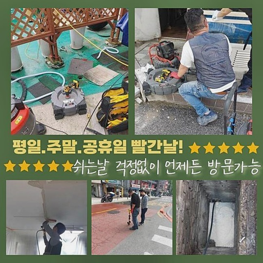
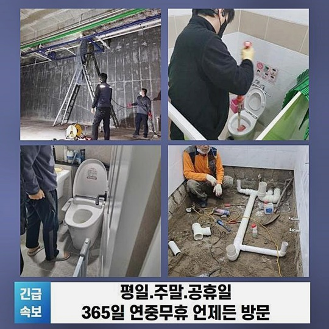
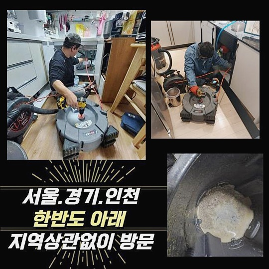
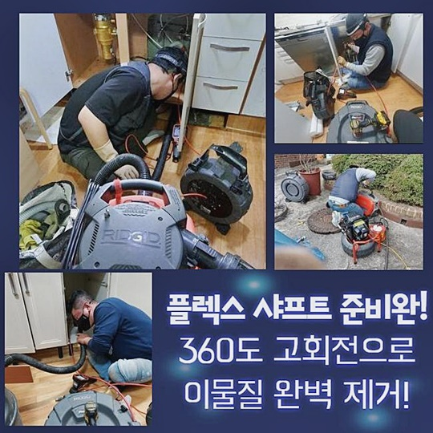
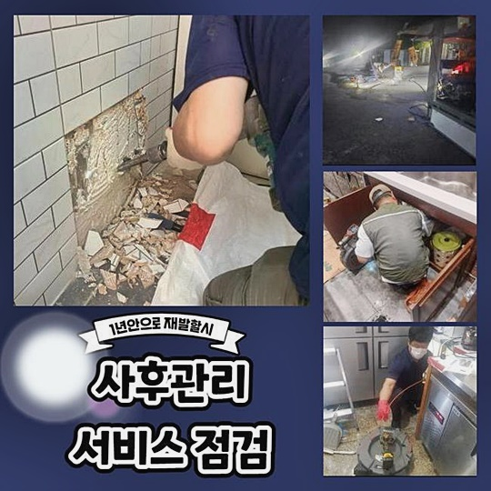
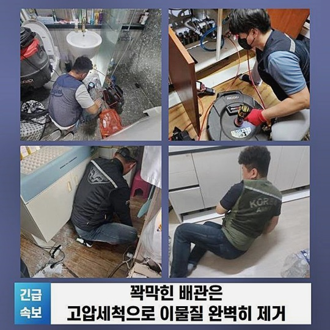
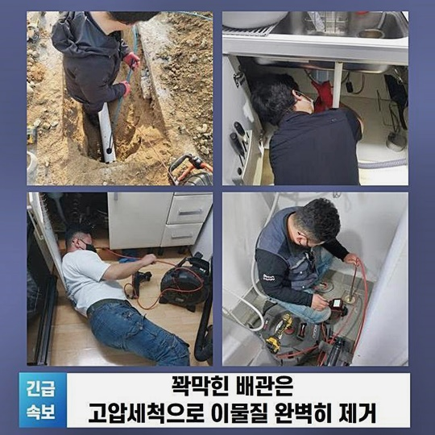

🏠 강서구 화곡동대변기막힘 오쇠동 악취차단 출장수리
용인시 처인구 배관막힘 전문 시공 후기

📋 작업 개요
- 위치: 용인시 처인구, 수원시 영통구, 화성시 동탄
- 서비스 유형: 배관막힘, 고압세척, 내시경점검
- 작업 일시:
- 업체명: 하수구수사대 (010-5615-2118)
🔍 문제 상황
강서구 화곡동대변기막힘 오쇠동 악취차단 출장수리
같은 빌딩 하에 다수가 머무르는 장소는 다수의 원인으로 하수의 흐름이 끊어집니다
오늘 알려드릴 장소는 역시 다세대 건물이었습니다 건물의 제일 밑층에서 하수구가 비정상으로 가동돼서 고통스러움을 호소하시던 상황에 직면하셨습니다
하수가 정상 배출되지 않고 역류가 빚어진다면 제일 밑 세대에서 비교적 먼저 일어납니다
이처럼 오류가 생기는 사유를 생각해보면 배관이 탑재하고 있는 형상으로 인한 결과인데요
하수를 들여보내고 내보내는 공정을 문제 없이 전달되도록 하려면 개별 세대배관들과 주요한 굵직한 배관이 똑같은 경로로 수렴이 되는데요
기다랗게 이어진 배관들은 연결감을 갖고 있으므로 어떤 구역에 오물이 차서 봉쇄되거나 트러블이 형성되는 상황 속에서는 한 집에서만 잘못된 증상이 외관상 보이지 않고 건물 내의 여러 곳들에서 일제히 동일한 사안을 맞이할 수 있어요
더러운 물의 역행을 비롯한 배관 어딘가가 막혀있는 배관으로 인해 건물의 가장 하단부에서 손해를 엄청나게 참아내야 하는 상황이었죠
건물을 유지보수하시던 관리 스텝분께서 건물 배관이 중단되어 난리라고 출장이 필요하다고 접수를 넣어주셨습니다
통수가 순탄하게 무언가의 원인으로 막혔으니 고층의 주민들까지도 불편함이 전달되고 있는 현재 상태로 보였습니다
접수 시에 이야기를 나눴던 내용을 분석해서 대략적으로 짐작을 해보았고 도구나 기기를 빠짐없이 챙기고 조속히 작업지로 향했네요

🔎 원인 분석
💡 전문가 진단: 정밀 진단 장비를 사용하여 슬러지의 고착 여부를 판명하고 타격/세척 작업을 실시했습니다.
하수구의 중단 이슈는 모든 곳에서 생겨나며 건물의 양식을 가리지 않고 쉽게 생겨나는 문제예요
설비가 새것이라 할지라도 하수구와 관련된 정보에 대하여 배우려는 자세로 어딘지 이상하다 싶으면 신속하게 조치할 수 있을만한 필요한 정보를 확보해 두는 것이 권장됩니다
다수의 상황들을 극복해 오면서 종합적인 막힘문제를 안고 있다해도 문제점을 날카롭게 꼬집어내어 해소를 해드리고 있으니 마음 편히 접수를 하시면 되겠습니다
주소지에 도착하면 첫 과정으로 어떤 징후들이 나왔는지 심혈을 기울여 파악합니다
연락을 이미 받긴 했지만 전문가의 해석으로 보면 오류라고 보이는 측면은 다르게 읽힐 수 있기에 사전 점검이 중요한 겁니다
뚫기에 급급하는 것보다 속사정을 속속들이 알아야 향후 업무의 완성도가 상승되기 때문입니다
난리통을 방불케 하는 모든 구역을 조사하면서 단번에 하수구 관련 이슈를 탈피할 수 있는 해결책을 물색해 봐요
장비를 통해서 메인관로를 관찰하면서 문제가 생긴 원인을 규명해 보았는데요
최종적으로 사용하고 폐기된 하수의 잔량이 걸림 없이 배출되지 못했던 것은 각종 이물질이 뭉쳐있는 찌꺼기 뭉치가 배관을 채워 장애물처럼 막고 있었죠
원활하지 않은 도중에 물을 조금만 힘줘서 돌려도 압력으로 역류를 하면서 주요 관로와 가장 인근에 있다고 할 수 있는 가장 밑에 위치한 세대에서 물이 바깥으로 터져나오는 현상이 첫 주자로 생긴 겁니다
많은 세월동안 현장들에서 여러 막힘들을 수선해 드렸던 시간들이 많이 누적되었으니 유연한 사고를 통해서 에러가 난 구역과 제일 효과적일 수단을 발견해 내게 됩니다
하수구로 물을 폐기하는 중에 여러 더러운 불순물이 섞이는데요!

🔧 작업 과정
이것들이 계속 누적되면서 결국엔 막힘까지 초래하게 됐다고 추정해 볼 수 있었네요
끼인 이물을 걷어내는 노력으로 핵심이라 할 수 있는 씨앗을 소거시키는 것이 시급하다고 사료되었습니다
문제의 이유를 철저하게 식별하는 것이 전체 작업을 좌우하므로 저희의 배관 카메라를 배치시켜서 내부 탐사 과정을 이어가며 사태를 봐줬어요
이런 카메라는 보편적으로 흔히 의료용 도구로 받아들이시지만 배수로의 전용으로 나온 특수 기기입니다
배관은 매우 좁다랗기 때문에 눈으로 들여다 보는 방법으로는 입구를 넘어선 위치까지는 알아차리기가 까다로운 구조를 지니고 있으니 이런 조건의 속을 엿볼 수 있게 돕는 자구책을 써야 합니다
뒤쳐지지 않는 신식 기구의 긴요성은 하수구를 아무런 변형이나 파손 없이 안정성있게 처한 문제를 풀어갈 수 있게 돕기 때문이죠
충분한 이해도나 베이스 없이 하는 장치의 활용은 하수구에 역으로 데미지를 입혀서 배수 장치의 토탈 교체라는 공사로 사태를 장기화 시킵니다
노폐물들의 주된 구성물들과 사이즈나 특성들을 모두 알아냈다면 작업 노선을 정하는 데에 든든한 발판이 됩니다
도움을 줄 전문가를 찾을 때엔 다수의 프로젝트 경험을 지니는 동시에 작업의 과정을 수행할 때 필요한 장치 보유 여부를 간략하게나마 훑어보신 이후에 최종적으로 결정하시면 좋겠네요
단독주택은 배수관이 일정하게 장착되어 있지 않으며 장소마다 다르고 여러 문제가 합쳐진 혼합형도 있어요
그렇기 때문에 내부 탐사 과정을 할 시에는 구간별로 확인을 하고 한 곳에 분명한 사유가 있다해도 이곳 뿐 아니라 다른 위치의 구역까지도 동시에 확인해줘야 해요
이슈가 발생한 곳을 파악했으면 그 지점으로 어떠한 기계를 집어넣어 주범을 뚫어버릴 건지 밑그림을 그려봐야 합니다
뚫음 업무를 하기 위해 쓰는 기기는 다채로우나 적절하게 다뤄야 고질적인 장애물을 속 시원하게 극복할 수 있는 것이죠
철저한 조사를 통해 얻어낸 심한 곳에 중점을 두고 이물질을 덜어내주기 위해서 고압수를 통한 세척 클렌징을 시도했습니다
찌꺼기들이 단단하게 누적된 섹션에는 돌아가는 강도가 기가 막힌 플렉스 샤프트를 부드럽게 잘라내 줍니다
샤프트의 특성은 내부에 진입되어 거대한 바위처럼 뭉쳐버린 이물질들을 분해하고 흡입하여 제거하는 방식으로 다양한 용도로 활용됩니다
뻥 뚫리게 만들어 주고서 고압수를 화끈하게 쏴서 더러웠던 배수구의 속을 클리닝을 이어갑니다
싹 정리를 다 해줘야 향후 하수구 속에 새로운 슬러지가 달라붙지 못하는 환경을 조성할 수 있습니다


✅ 작업 완료
습식청소기인 석션기를 통해서 잘게 쪼갠 이물 조각들을 조금도 남지 않게 밖으로 꺼내주었습니다
만에 하나 남은 조각으로 인해 재차 막힘이 도래한다면 용납할 수 없는 만큼 항시 내시경을 동시에 배치시켜서 잔해물이 남지않게 신중히 조사했어요
어쩔 수 없이 물에 운반된 이물이 모여드는 곳이기에 주기적으로 청소를 해야하죠
전문적인 점검을 실시하면서 내부 정화 작업을 해준다면 설비적인 곤란함 없이 시설물을 쓰실 수 있습니다
하수구의 불통 이슈로 인해 골머리를 앓고 계신다면 항상 출동 준비를 하고 있으니 상담을 요청해 주세요




⚠️ 하수구 배관 막힘 예방 및 관리 가이드
- ✅ 머리카락, 비닐, 물티슈 등 물에 분해되지 않는 이물질은 절대 흘려보내지 마세요.
- ✅ 기름기 많은 식기는 설거지 전 키친타올로 먼저 기름때를 닦아내세요.
- ✅ 주기적으로 배수구에 뜨거운 물을 가득 부어주어 유지방 고착을 방지하세요.
- ✅ 작업 후 1년 이내 재발 시 무상 A/S 보증 서비스를 제공합니다.
💡 핵심 정리
- 확실한 장비 작업(내시경 점검 및 샤프트 스케일링)으로 원인을 뿌리 뽑습니다.
- 작업 후 1년 이내에 동일한 부위 재발 시 100% 무상 A/S 서비스를 보장합니다.
- 서울 · 경기 · 인천 전 지역에 24시간 언제든 긴급 출동할 수 있도록 항시 대기 중입니다.
❓ 자주 묻는 질문 (FAQ)
🚨 용인시 처인구 배관막힘 문제로 고민이신가요?
정확한 원인 진단과 확실한 시공으로 재발 없는 해결을 약속드립니다.
24시간 긴급 출동 | 서울 · 경기 · 인천 전지역 | 1년 내 재발 시 무상 A/S